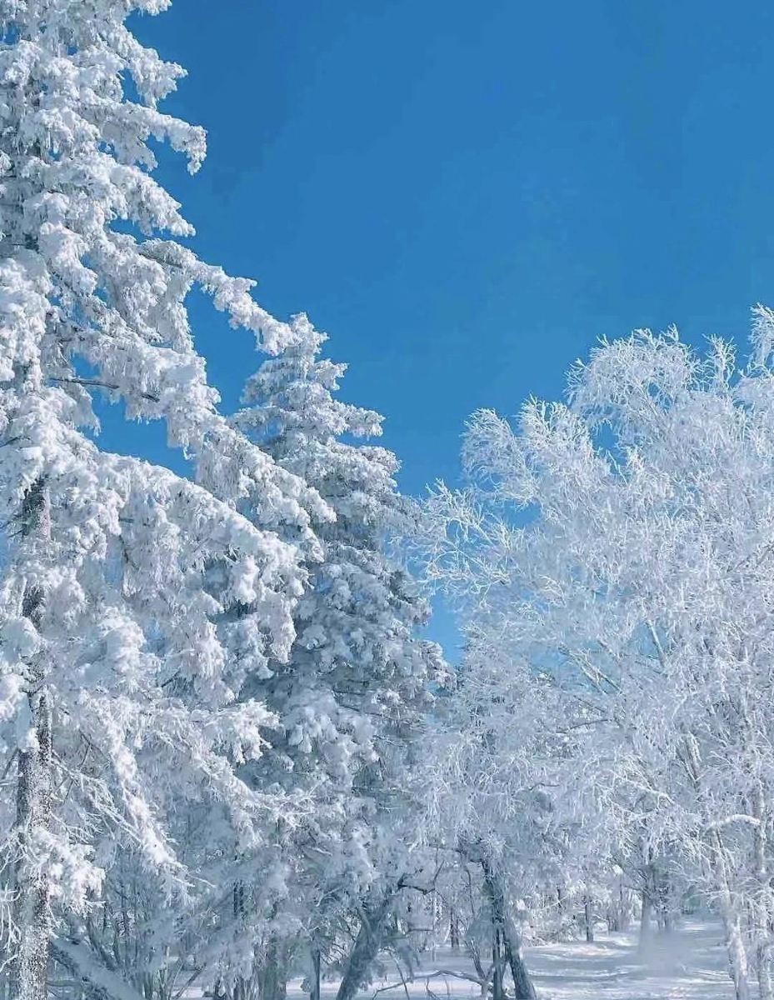
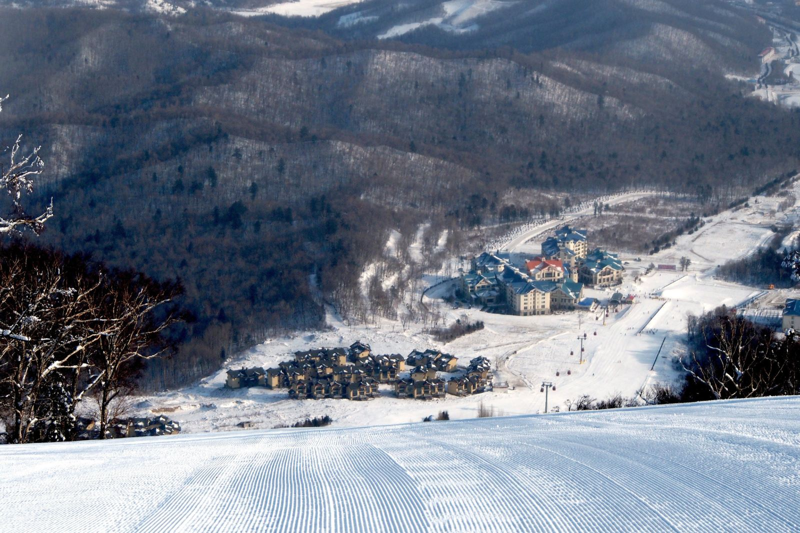
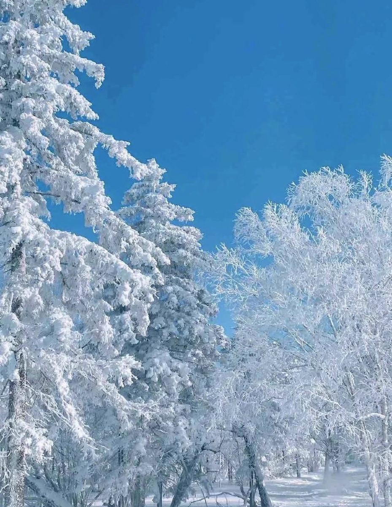
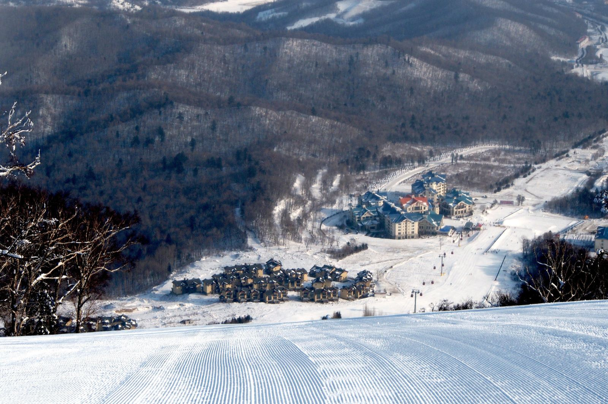

介绍
亚布力滑雪旅游度假区云集了多家专业滑雪场和度假酒店，是中国有名的滑雪胜地。在这里，你可以来到专业滑道上体验刺激的“雪上俯冲”，并有许多专业教练帮助初学者迅速掌握基本技巧，让你能尽情享受滑雪的乐趣。
亚布力滑雪旅游度假区位于亚布力镇南部山区，这里雪质优良、硬度适中，积雪期为170天，滑雪期近150天，每年的11月中旬至次年3月下旬是滑雪佳期，此外还有玩雪圈、雪地摩托等项目，亚冬会等国际赛事常在这里举办。
度假区由三座海拔1000米以上的山峰（大锅盔、二锅盔、三锅盔）组成，坐落着多家滑雪场，比如国内场地较好的新濠阳光滑雪场、国内规模较大设施较好的新体委滑雪场等，虽然滑雪费用比普通滑雪场略贵，但值得体验。
此外，夏季的度假区也很适合休闲度假，这里森林茂密、风景优美，度假区内有高尔夫球、划船、钓鱼等娱乐项目，是避暑消夏的好去处。
开放时间
全年 09:00-17:00,（16:00停止入园）；具体营业状态以当天开放情况为准
优待政策
儿童：身高1.2米(不含)以下，免费
老人：年龄65周岁(含)以上凭老年证或身份证，免费
学生：全日制大学本科及以下学历学生（不含成教生和研究生）凭本人有效学生证或学生卡，半价
残疾人：凭残疾证，免费
现役军人：凭军官证等有效证件，免费
南昌本地市民：南昌本地市民凭本人身份证，半价
退役军人：持有本人退役军人优待证，半价
服务设施
停车场：【景区停车场】参考价格：免费
 


